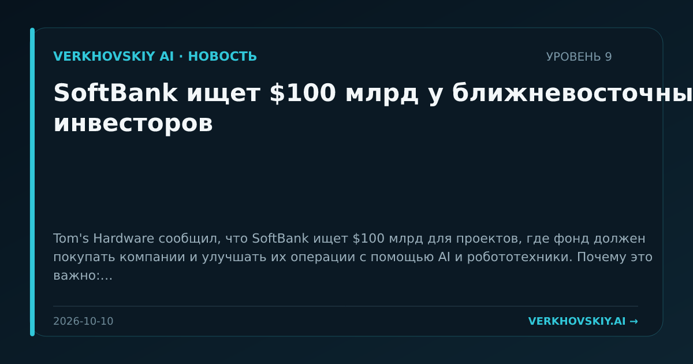

SoftBank ищет $100 млрд у ближневосточных инвесторов
Tom's Hardware сообщил, что SoftBank ищет $100 млрд для проектов, где фонд должен покупать компании и улучшать их операции с помощью AI и робототехники. Почему это важно: Суверенный и крупный частный капитал снова направляется не только в модели, но и в переустройство действующих компаний. AI становится методом финансово-операционного контроля над активами.